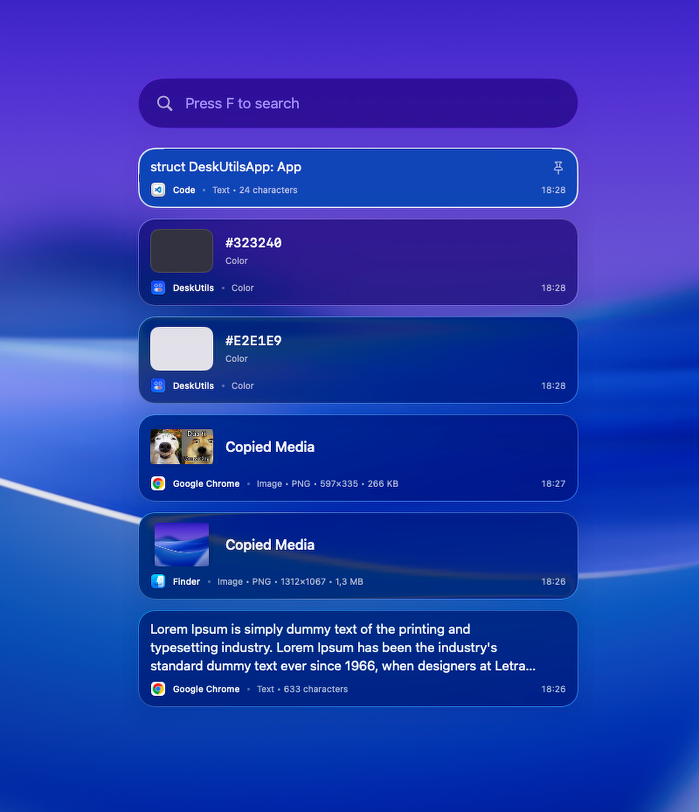
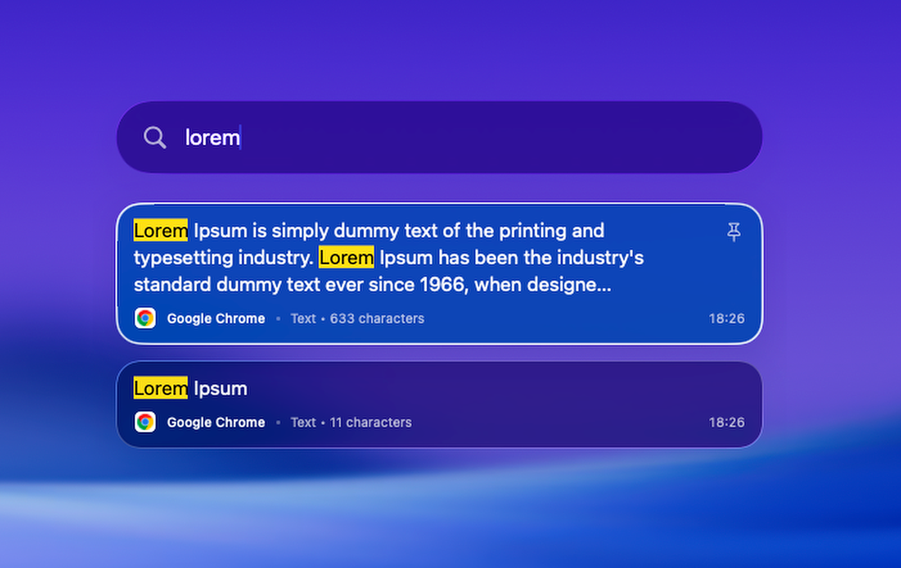
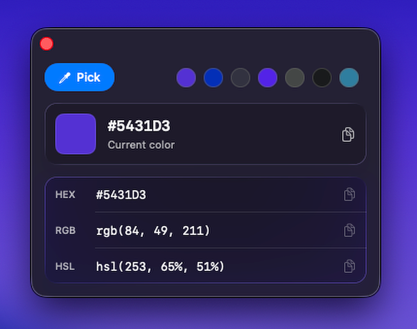
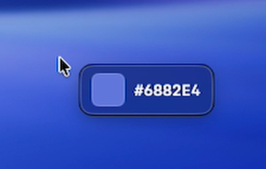
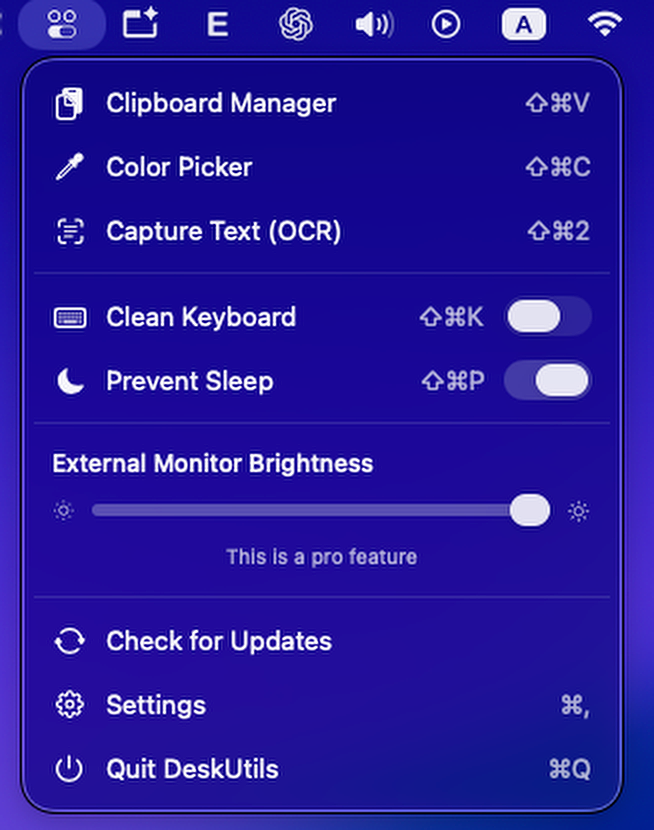

Free + Pro
Clipboard Manager
Keep text, colors, images, and files organized and instantly searchable. Free includes up to 50 items; Pro will expand history to 500.
- Fast keyboard search
- Pin important items
- Filter by content type
Native utilities for macOS
DeskUtils brings focused productivity tools into one lightweight native macOS app. Manage clipboard history, pick colors, capture text, control displays, and keep everyday tasks close at hand — all from your Mac.
Free beta · Requires macOS 26 or later
Available now
Six focused tools are ready in the current beta. Each one feels at home on macOS and stays out of your way until you need it.
Keep text, colors, images, and files organized and instantly searchable. Free includes up to 50 items; Pro will expand history to 500.
Pick colors anywhere on your screen with accurate native macOS controls and copy the value in the format your work needs.
Temporarily disable keyboard input while cleaning your Mac, then unlock it safely when you are finished.
Capture text directly from your screen and turn it into editable content without breaking your workflow.
Keep your Mac awake during presentations, downloads, and other long-running tasks, then switch back when you are done.
Control supported external display brightness directly from your Mac. Free includes a temporary preview; Pro will keep brightness settings persistent.
Why DeskUtils?
A small, native utility suite designed around speed, privacy, and the workflows you repeat every day.
Built specifically for macOS with a lightweight, platform-native experience.
Your clipboard content is processed and stored locally on your Mac.
Focused tools that save time without adding unnecessary complexity.
See it in action
DeskUtils uses familiar controls and clear visual feedback, so every utility feels easy from the first launch.





Future roadmap
These ideas are not included in the current public beta. No release dates are being announced, and plans may change.
Simple annual licenses
Start free. Upgrade when you need more power. Paid licenses are being prepared and are not available for purchase yet.
Free
$0forever
The essential DeskUtils experience.
DeskUtils Pro
$19.99/ year
Annual license for one Mac.
DeskUtils Pro Multi-Mac
$29.99/ year
Annual license for up to three Macs.
Annual licenses are billed yearly and renew automatically until cancelled. License keys will be provided through Lemon Squeezy after purchase.
When Pro launches
Choose a Pro annual license through Lemon Squeezy.
Your DeskUtils license key arrives after purchase.
Unlock Pro inside DeskUtils. No DeskUtils account is required.
Private by design
Clipboard data is stored locally on your device. DeskUtils does not upload clipboard content to external servers.
Read the Privacy PolicyUse the free app without creating a DeskUtils profile.
Your clipboard history remains on the device where it was created.
Productivity content is processed by the native app on your Mac.
This website does not use analytics, tracking pixels, or advertising cookies.
Install DeskUtils
Download the beta, move DeskUtils to Applications, and grant only the permissions needed by the utilities you use.
Early beta builds may require additional confirmation from macOS during installation.
Support
Questions, feedback, licensing issues, or bug reports? Get in touch and we will help.
deskutils.app@gmail.com